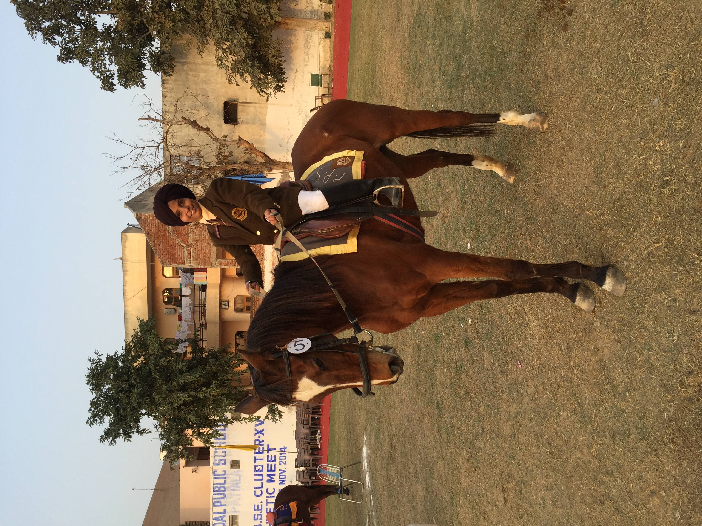
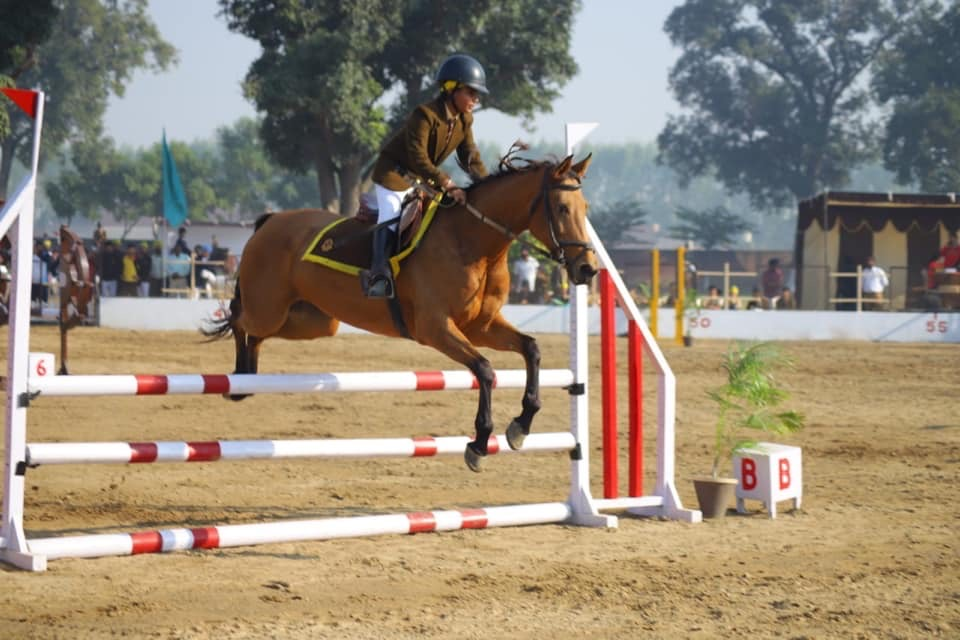
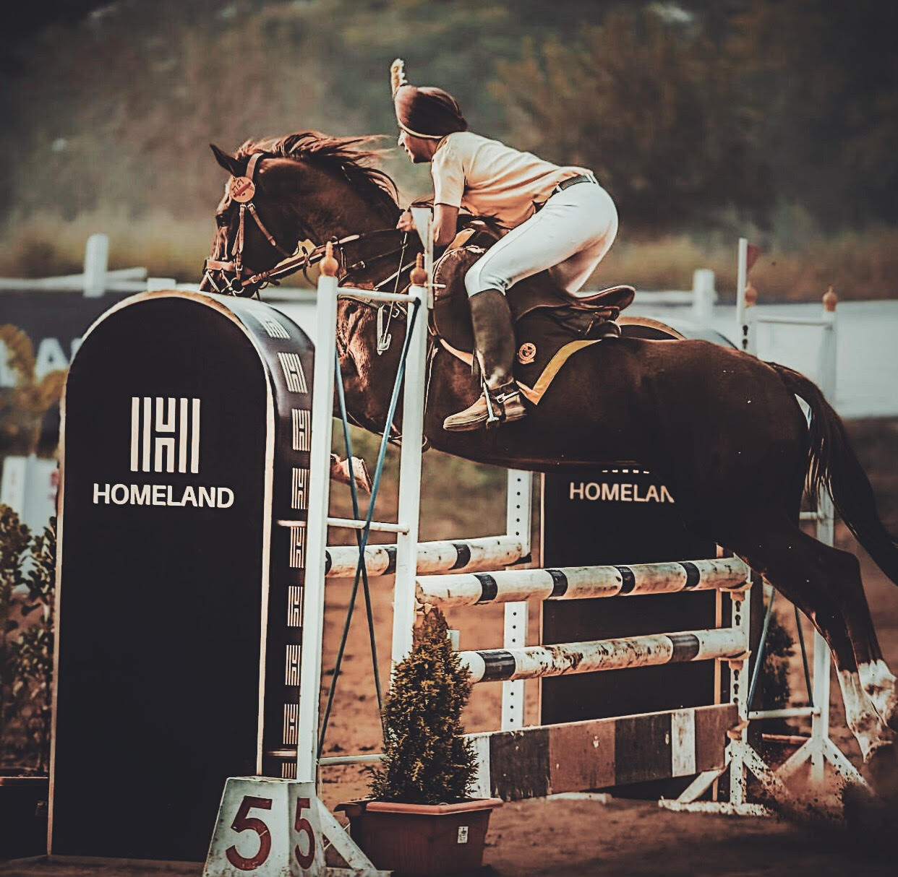
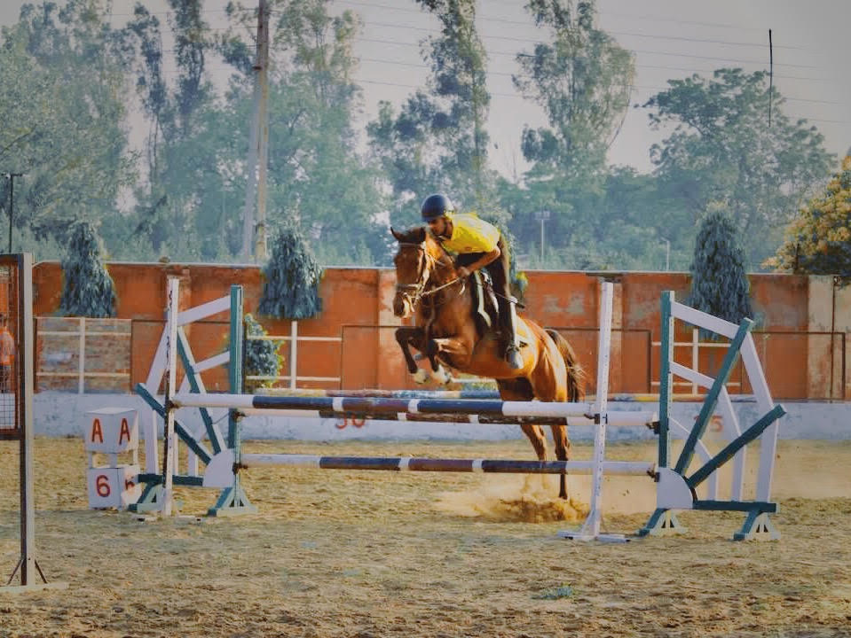
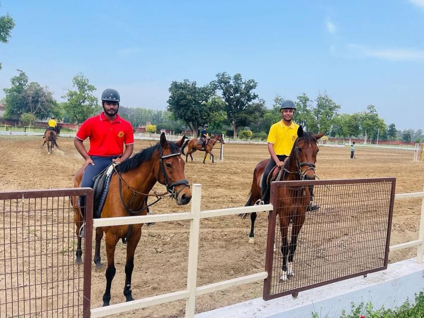

Gretings!!
I am Hirdayjeet Singh Bhandal from Punjab, India. Here, you can learn about my passion for horse riding and my journey over the years.On 15 th April,2015 I joined The Punjab Public School,Nabha.PPS provided an ideal environment for me to realize my full potential, which might have remained untapped elsewhere.. It was 2nd of December,2015 whenI first mounted a Dark Bay Marwari horse named Rising Sun. Shortly after, I experienced my inaugural jump, an exhilarating moment that left me ecstatic .on 15 th December,2015 I entered my first competition, The Punjab State Equestrian Championship in Jalandhar. It was there that I clinched my maiden medal, with more victories following suit. My forte lies in Show Jumping.
I am Hirdayjeet Singh Bhandal from Punjab, India. Here, you can learn about my passion for horse riding and my journey over the years.On 15 th April,2015 I joined The Punjab Public School,Nabha.PPS provided an ideal environment for me to realize my full potential, which might have remained untapped elsewhere.. It was 2nd of December,2015 whenI first mounted a Dark Bay Marwari horse named Rising Sun. Shortly after, I experienced my inaugural jump, an exhilarating moment that left me ecstatic .on 15 th December,2015 I entered my first competition, The Punjab State Equestrian Championship in Jalandhar. It was there that I clinched my maiden medal, with more victories following suit. My forte lies in Show Jumping.
Till now I have participated in many competions:-
- The Delhi Horse Show (2016,2017,2019&2023)
- Punjab State Equestrian Championship(2015,2016&2019)
- All India Public School Equestrian Championship(2016,2017,2018&2019)
- Jalandhar Horse Show (2015)
- Patiala Horse Show (2016&2023)
- Chandigarh Horse Show (2016,2021&2022)
- Nabha Horse Show (2017,2018&2019)
- Kapurthala Horse Show (2018)
My Horses
Luck Chika Luck
My first horse was Luck Chika Luck .Though it was weird name ,but she was one of the best horses ever belonged to our school.She came from Akal Sahai Studfarm.She helped me win my first gold medal in the event Normal Show Jumping at Patiala Horse Show.
Luck Chika Luck had a stupendous carier in show jumping and was also adjuged THE BEST HORSE at Delhi Horse Show.

My first horse was Luck Chika Luck .Though it was weird name ,but she was one of the best horses ever belonged to our school.She came from Akal Sahai Studfarm.She helped me win my first gold medal in the event Normal Show Jumping at Patiala Horse Show.
Luck Chika Luck had a stupendous carier in show jumping and was also adjuged THE BEST HORSE at Delhi Horse Show.
Gold Beauty
Gold beauty a Mare truly exhibited the meaning of her name.She is a brave horse and never got scared of any obstacle in the course.Moreover,she is very friendly with the new learners.Sometimes she messes up with her foot work and is very moody ,but I beleieve if she would have been raised by a good coach and paid attention, she would have turned up to be superb in Dressage and excellent in Show Jumping.

Gold beauty a Mare truly exhibited the meaning of her name.She is a brave horse and never got scared of any obstacle in the course.Moreover,she is very friendly with the new learners.Sometimes she messes up with her foot work and is very moody ,but I beleieve if she would have been raised by a good coach and paid attention, she would have turned up to be superb in Dressage and excellent in Show Jumping.
Red Cloud
Red Cloud was born in our school.Red Cloud and his brother Red Rum both are excellent in show jumping.He is very friendly ,but one needs to be aware that he may bite you.

Red Cloud was born in our school.Red Cloud and his brother Red Rum both are excellent in show jumping.He is very friendly ,but one needs to be aware that he may bite you.
Red Cloud
Silver peg is the best horse in our stables.She jumped 180cm in front of EFI Judges at the delhi horse show and is capable of breaking the Indian Record of 192cm. The requirement for the rider is to be soft handed and good seat,and she will jump over any fence.

Silver peg is the best horse in our stables.She jumped 180cm in front of EFI Judges at the delhi horse show and is capable of breaking the Indian Record of 192cm. The requirement for the rider is to be soft handed and good seat,and she will jump over any fence.
for nine years I stayed in PPS and won 60+medals .I colud not have achieved all my endeavours without the support of my loved ones.My parents backed me emotionally and financialy.My caoches helped me harness my skill and specially Mr.Jatinder Singh Tiwana played a significant role in shapping me.My freinds were allways there to cheer me up, though we competed against each other but our bonding stood strong in all situations.
